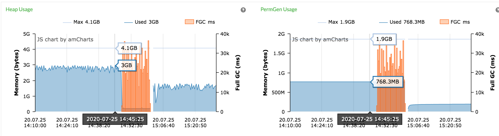
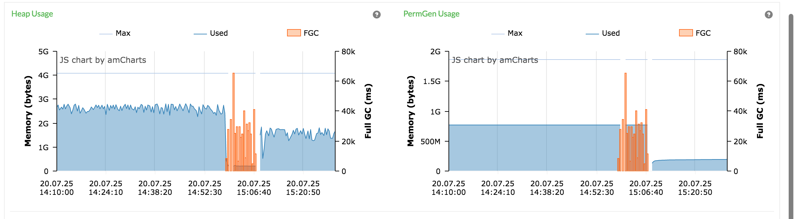
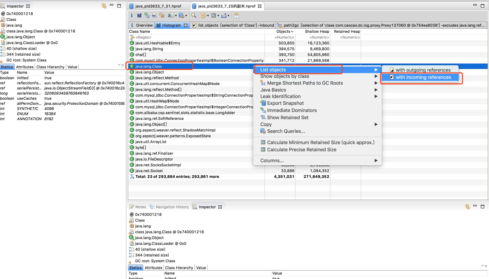
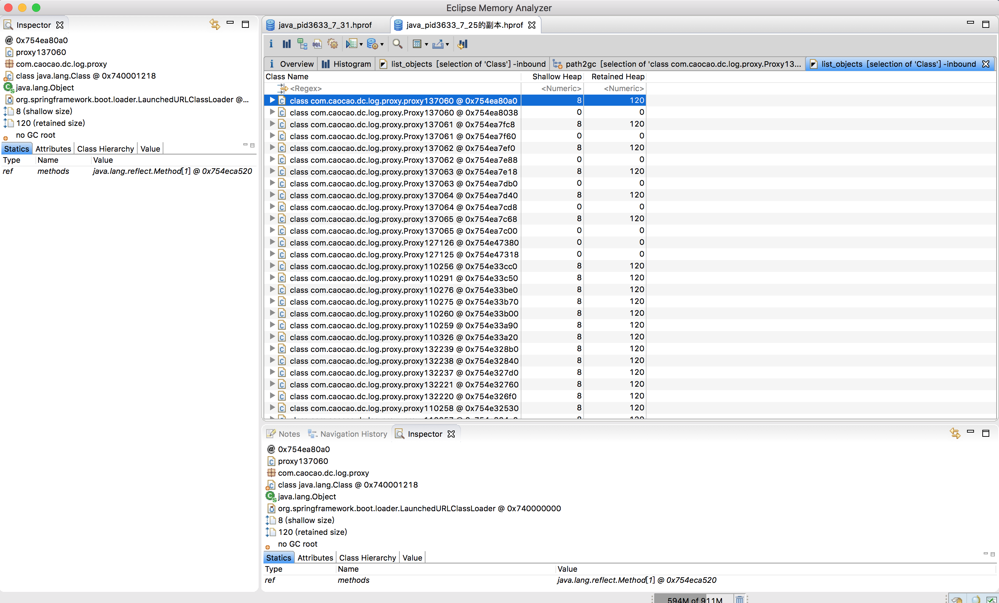
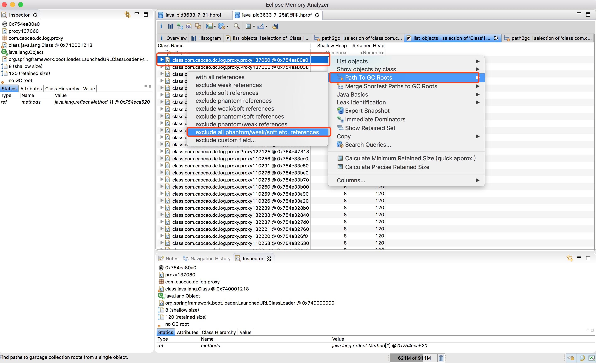
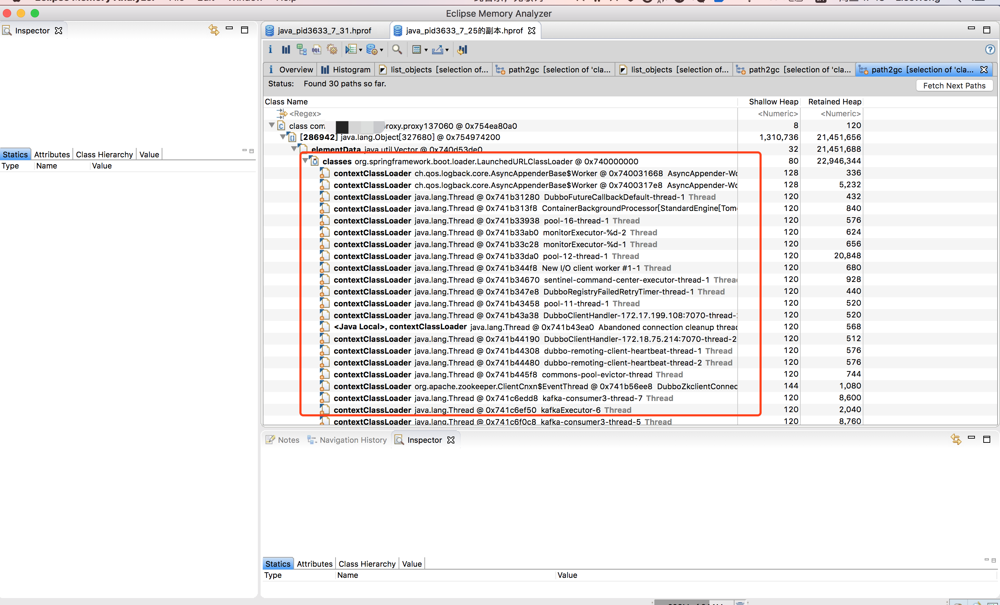

事件回顾
清楚的记得是2020/7/25 14:34分左右，周六的下午，我还在公司苦逼的加班中，突然钉钉告警群里出现大量应用OP的dubbo超时调用、空指针异常，异常中间还有Metaspace元空间不足等异常:
o.a.c.f.l.ListenerContainer 98 [ERROR] Listener \(org.apache.curator.framework.recipes.cache.PathChildrenCache$3@7edb7fd5) threw an exception
java.lang.OutOfMemoryError: Metaspace
错误类型：【oom】
告警内容：2020-07-25 15:05:05:113 d5f54db7c1ca49ab85b9f54cde234bd1 c.c.d.l.w.DriverTraceWriterUtil 39 [ERROR] driver trace writer to file fail,ex:[{}]
java.lang.RuntimeException: by java.lang.ClassFormatError: Metaspace
at com.xxx.xx
再紧接着，发现我们应用OP的服务器大量FullGC，先一台发生，很快第二台开始FGC，第10台…
2020-07-25T15:10:50
应用:xxx
主机:xxx(
agentId: yyyy
发生FGC，共耗时:25012ms
2020-07-25T15:10:25
应用:xxxx
主机:xxxx
agentId: yyy
发生FGC，共耗时:4223ms
涉及到对OP系统调用的各系统都在反馈出现dubbo调用超时，都在报错中，我们通过pinpoint也发现应用频繁发生了FGC:


上面我们大概可以判断出来，是由于Metaspace元空间不足，出现内存溢出，导致jvm频繁触发full GC，为了保证业务正常，此时我们让运维紧急重启了服务器，通过重启服务器，业务逐渐恢复正常，元空间使用量也降下来了。在发生FGC时让运维dump内存了，后面会分析该文件。
JVM参数
OP应用的生成JVM参数如下:
/usr/local/java/bin/java
-server #指定JVM的启动模式是client模式还是server模式
-Xms4g #初始化堆内存4G,堆内存最小值
-Xmx4g #最大堆4g
-Xmn2g #年轻代2G，老年代大小=Xmx-Xmn
-Xss512k #每个线程的堆栈大小
-XX:MetaspaceSize=256m #元空间的初始大小
-XX:MaxMetaspaceSize=512m #元空间最大值
-XX:-UseGCOverheadLimit #预测是否要OOM了，提前抛出异常，防止OOM发生
-XX:+DisableExplicitGC #禁用System.gc()
-XX:+UseConcMarkSweepGC #指定老年代的收集算法使用CMS，会默认使用ParNew作为新生代收集器
-XX:+CMSParallelRemarkEnabled #开启并行标记，减少停顿时间
-XX:+UseCMSCompactAtFullCollection #FULL GC时对老年代进行压缩。CMS默认不会移动内存，因此容易产生碎片。增加该参数虽然会影响性能，但可以消除碎片
-XX:+UseFastAccessorMethods #正确获取方法的调用计数，以便VM可以更好地识别代码中的热点
-XX:+UseCMSInitiatingOccupancyOnly #指定HotSpot VM总是使用-XX:CMSInitiatingOccupancyFraction的值作为老年代使用率限制来启动CMS垃圾回收。如果没有使用-XX:+UseCMSInitiatingOccupancyOnly，那么HotSpot VM只是利用CMSInitiatingOccupancyFraction启s动第一次CMS垃圾回收，后面都是使用HotSpot VM自动计算出来的值
-XX:CMSInitiatingOccupancyFraction=70 #CMS垃圾收集器，老年代使用率达到70%时，触发CMS垃圾回收
-XX:LargePageSizeInBytes=128m #堆内存大页的大小，大的内存分页可以增强 CPU 的内存寻址能力，从而提升系统的性能
-Djava.awt.headless=true
-Djava.net.preferIPv4Stack=true
-Ddubbo.application.qos.port=12881
-javaagent:/usr/local/pinpoint/pinpoint-bootstrap-1.6.0.jar
-Dpinpoint.agentId=driver-op-...
-Dpinpoint.applicationName=OP
-Djava.ext.dirs=/usr/local/springboot/OP/lib:/usr/local/java/jre/lib/ext
-XX:+HeapDumpOnOutOfMemoryError #当堆内存空间溢出时输出堆的内存快照,配合-XX:HeapDumpPath使用
-XX:HeapDumpPath=/home/admin #当堆内存空间溢出时输出堆的内存快照输出目录
-cp /usr/local/springboot/OP/conf:.:/usr/local/java/lib:/usr/local/java/jre/lib -jar /usr/local/springboot/OP/OP.jar
由配置的JVM参数知道，指定了CMS为老年代的垃圾收集器，默认ParNew为新生代垃圾收集器，最大堆4g，老年代2g，年轻代2g，年轻中Eden区域和Survivor区域（From幸存区或To幸存区）的默认比例为8， 即设置survivor：eden=2:8(From:TO:eden=200MB:200MB:1600MB)，元空间初始化大小256MB，最大值512MB，如果老年代空间使用率达到70%，会触发CMS垃圾回收。由pinpoint上可以看出，元空间使用大概在770MB左右，超过了最大元空间值，导致元空间内存不足，触发FGC，这里有个疑问，明明配置的最大512MB，为什么使用了770MB，Metaspace还有一个区间是Klass Metaspace，由参数-XX:CompressedClassSpaceSize进行控制，JDK8的时候 Klass Metaspace默认是1G。
原因分析
MAT分析
使用MAT打开dump文件，点开Histogram柱状图，选择java.lang.Class，右击选择List objects，选择with incoming references(当前查看的对象，被外部引用)，查看通过这个class创建的类信息：


发现创建了大量Proxy类，右击选中Path To GC Roots，选中exclude all phantom/weak/soft etc.references(排除虚引用/弱引用/软引用等的引用链，被虚引用/弱引用/软引用的对象可以直接被GC给回收，要看该对象否还存在Strong引用链，如果有，则说明存在内存泄漏)：


发现Proxy类被org.springframework.boot.loader.LaunchedURLClassLoader强引用，导致生成的Proxy类无法被卸载一直残留在MetaSpace区造成内存泄漏。代码分析
上面分析出来生成Proxy类可能存在内存泄漏，代码中会发现用动态代理创建Proxy类对象并放入WeakReference中，每次GC时该对象都会被回收，会重复创建Proxy类对象，而且类加载器不会被回收，导致类不会被卸载。具体代码参考了dubbo代码com.alibaba.dubbo.common.bytecode.Proxy#getProxy(java.lang.ClassLoader, java.lang.Class<?>...)。解决方法
上层业务做缓存处理，不会重复创建Proxy对象。上线观察优化前后5天内的元空间增长，的确效果比较明显。
参考文章
- https://www.jianshu.com/p/738b4f3bc44b
- https://www.cnblogs.com/throwable/p/12216546.html
- https://blog.csdn.net/a15939557197/article/details/90635460?utm_medium=distribute.pc_relevant.none-task-blog-BlogCommendFromMachineLearnPai2-3.channel_param&depth_1-utm_source=distribute.pc_relevant.none-task-blog-BlogCommendFromMachineLearnPai2-3.channel_param